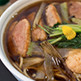

新着レシピ

季節菜の彩り前菜

簡単かぼちゃスープ

ヘルシー米粉パン

ぷりぷり海老料理
- 
かんたん鴨南蛮
今だからこそ見直したい「和食」

普段、私たちが何気なく口にしている和食ですが、その基本は一汁三菜。ご飯、味噌汁、お漬物の他、主菜（魚またはお肉）、副菜として季節毎の野菜の野菜と豆類で構成されます。
昔から、「旬の野菜を食べましょう」と言いますが、それは素材がゆっくりと時間をかけて蓄積してきた旨みや栄養価が最大になったところでいただいて、効率よく栄養を取り風邪などの予防をしましょうね、ということです。
それでは各季節毎の旬な野菜について調べてみましょう。
簡単！おすすめレシピ

- 季節の食材〜春〜
- 新たまねぎに春キャベツ、しんじゃが、山菜などなど・・・春の野菜は風味が良くみずみずしいのが特徴です。
それでは、春野菜を使ったレシピを紹介しましょう。

- 春野菜を食べて花粉症予防？！
- 春になると花粉症に悩まされる人は多いと思います。この花粉症、ある食材を取ることで少し緩和されるんです！！
さて、その食材とは・・・？